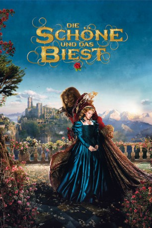
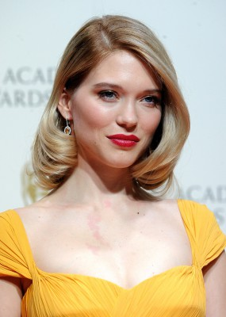
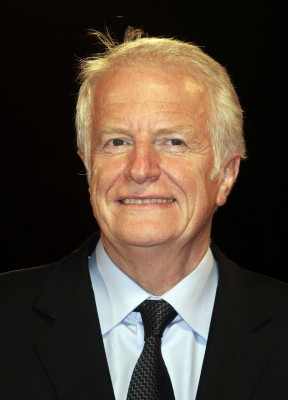
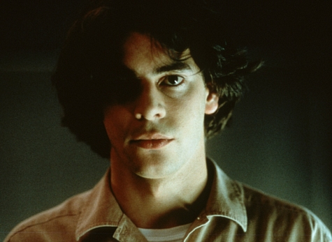
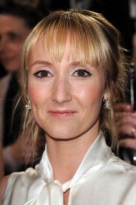
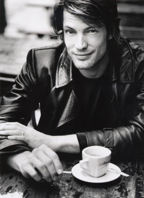

#3568 Die Schöne und das Biest
 
 IMDB-Wertung: 6.4 / 10
IMDB-Wertung: 6.4 / 10  Metascore: 0
Metascore: 0 
1810: Ein Händler steht nach dem Untergang seiner Schiffe vor dem finanziellen Ruin, weswegen er sich mit seinen sechs Kindern aufs Land zurückzieht. Bei einer Handelsreise gerät er in die Nähe eines gefährlichen Ungeheuers - und wird von dem Biest für den Diebstahl einer Rose zum Tode verurteilt. Eine der Töchter des Händlers, die anmutige und lebensfrohe Belle, fühlt sich für das Schicksal ihrer Familie verantwortlich und bietet an, die Strafe anstelle ihres Vaters anzutreten. Auf dem Schloss des Biestes erwartet sie jedoch etwas ganz anderes als vermutet - nicht der Tod, sondern ein Ort voll Magie, Freude und Melancholie. Belle und das Biest kommen sich mit der Zeit näher, wobei auch die Vergangenheit des Monsters kein Geheimnis bleibt. Die wilde und einsame Gestalt war einst ein schöner Prinz…
Jahr: 2014
Dauer: 113 Minuten
FSK: 6
Land: Frankreich Studio: Concorde FilmverleihTonspuren:
Untertitel: Deutsch,
Auflösung: 1080p (1920x804) Größe: 5744 MB
Genre: Fantasy, Liebe
Regisseur: Christophe Gans
Drehbuch: Tracy Rosen
Soundtrack:
Darsteller:
 Vincent Cassel als La Bête / Le Prince
Vincent Cassel als La Bête / Le Prince-  Léa Seydoux als Belle
-  André Dussollier als Le marchand
-  Eduardo Noriega als Perducas
- Myriam Charleins als Astrid
-  Audrey Lamy als Anne
 Yvonne Catterfeld als La Princesse
Yvonne Catterfeld als La Princesse- Dejan Bucin als Louis
-  Mickey Hardt als Etienne
 Richard Sammel als Le tenancier
Richard Sammel als Le tenancier- Nora Huetz als Serafina
- Mike Möller als Un brigand
- Thomas Hacikoglu als Un brigand
- James Bomalick als Un brigand
- Kriss Fuss als Un brigand
- Sara Giraudeau als Clotilde
- Jonathan Demurger als Jean-Baptiste
- Nicolas Gob als Maxime
- Louka Meliava als Tristan
- Wolfgang Menardi als Thierry
- Arthur Doppler als Virgil
- Elisabeth Bogdan als Fanny
- Marie Gruber als Adèle
- Gotthard Lange als L'huissier
- Max Volkert Martens als Le directeur Dumont
- Micha Bornhütter als Un brigand
- Olivier Jurhs als Un brigand
- Milos Reznicek als Un brigand
- Pavel Novotny als Un brigand
- Uli Richter als Un brigand
- Roman Spacil als Un brigand
- Dennis Oestreich als Invité du bal , uncredited
- Pascal Rohé als Garde , uncredited
Datei: X:\2014(N-Z)\Schöne und das Biest, Die (2014, FSK6, 1920x804).mkv seit 03.05.2016
Festplatte: HD 2013(I-Z)-2014(A-Z)
 Es gibt insgesamt 163 Filme in der Gruppe '2014(N-Z)'
Es gibt insgesamt 163 Filme in der Gruppe '2014(N-Z)'